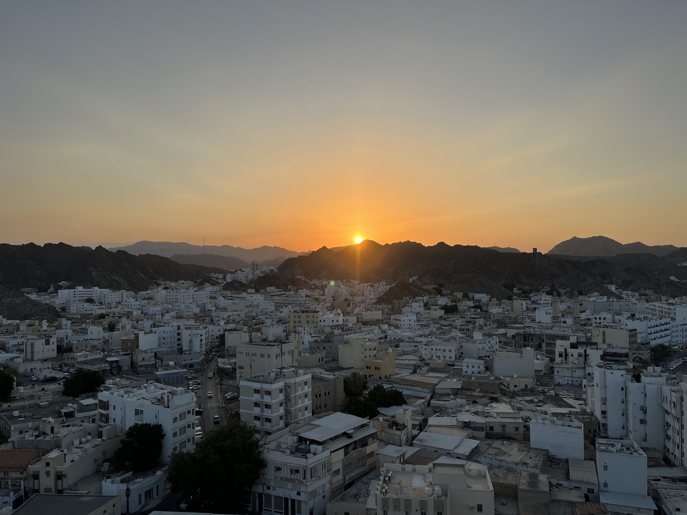
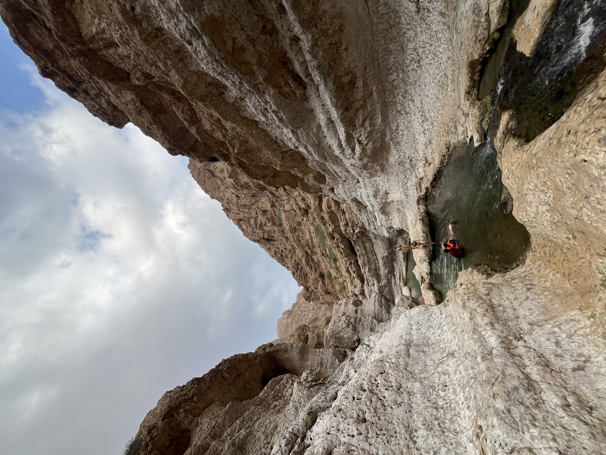
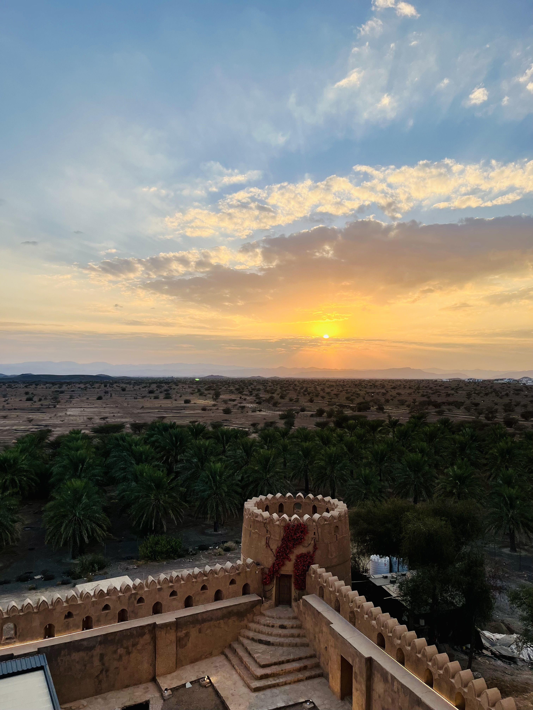
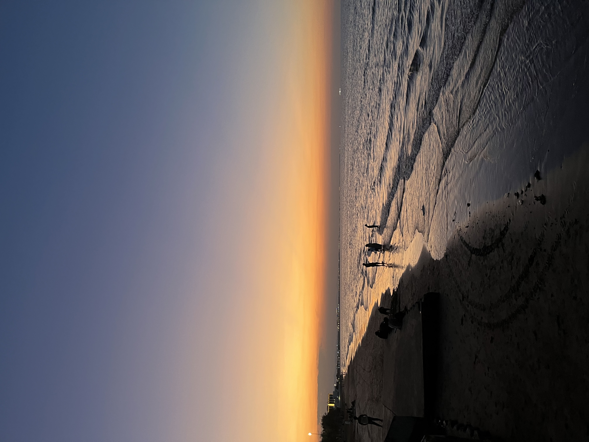
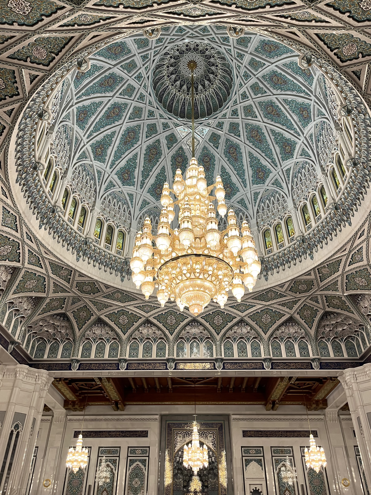
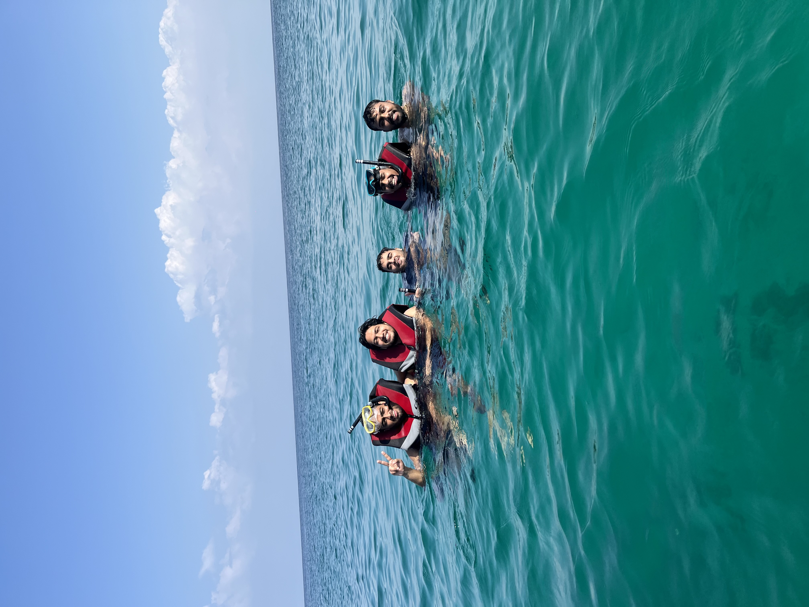
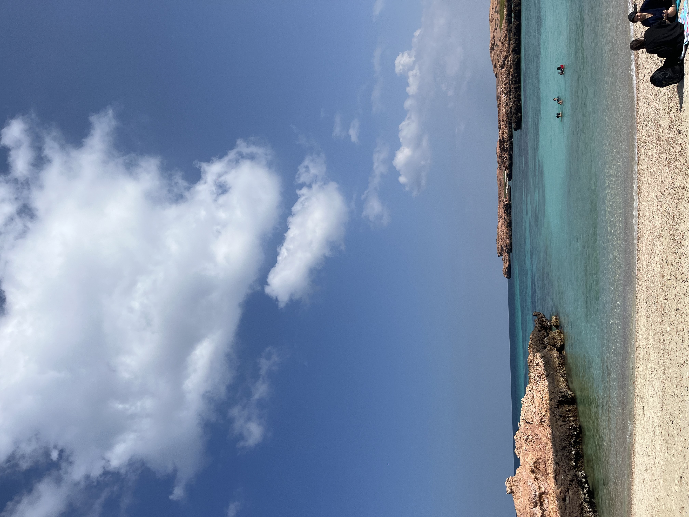
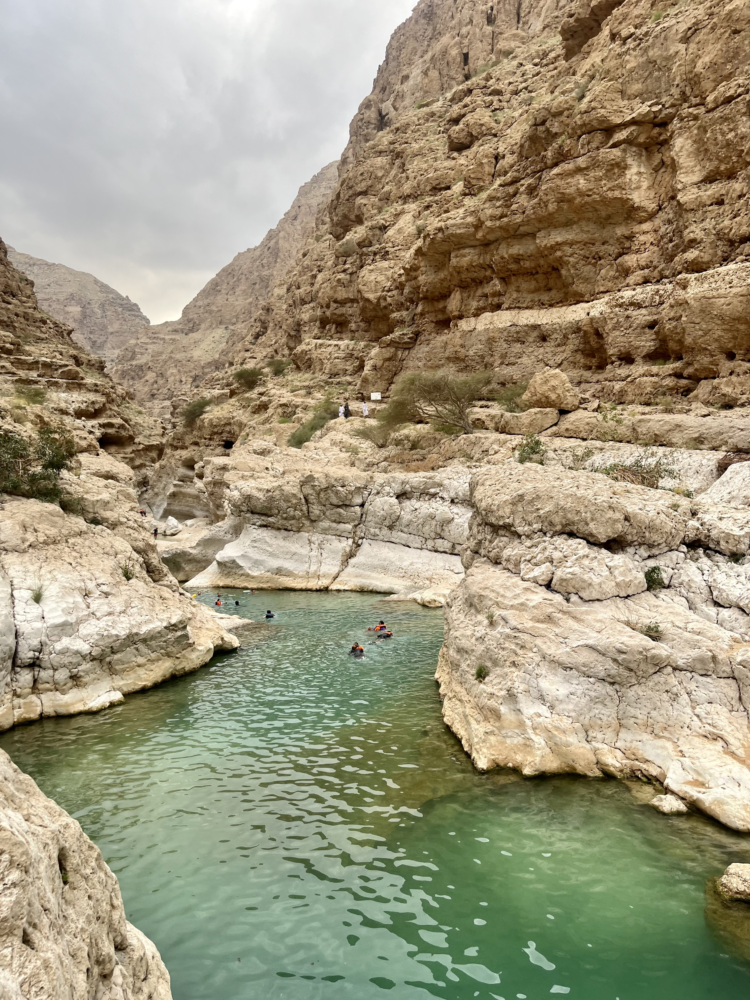
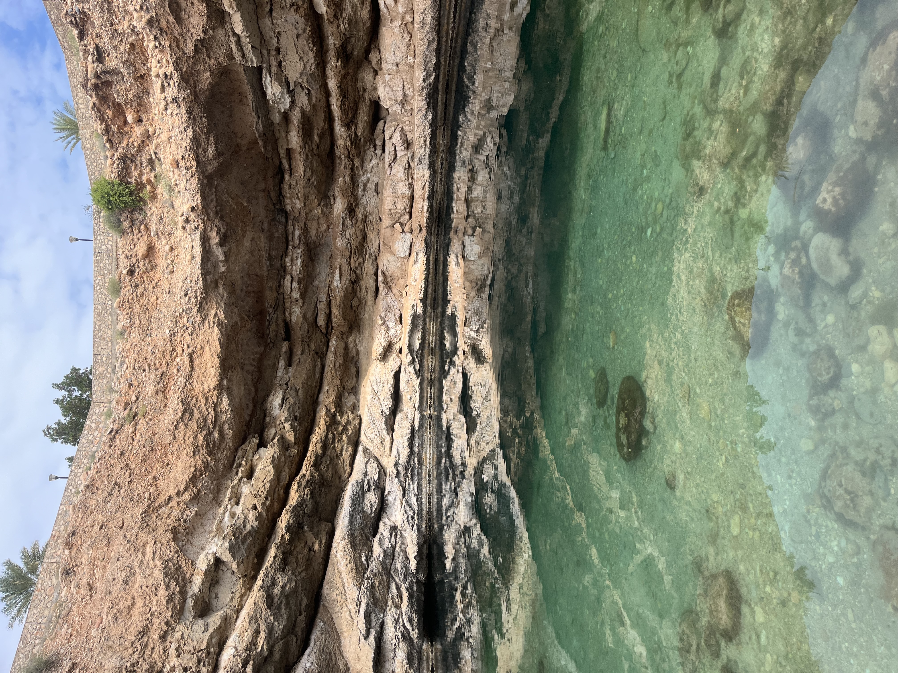
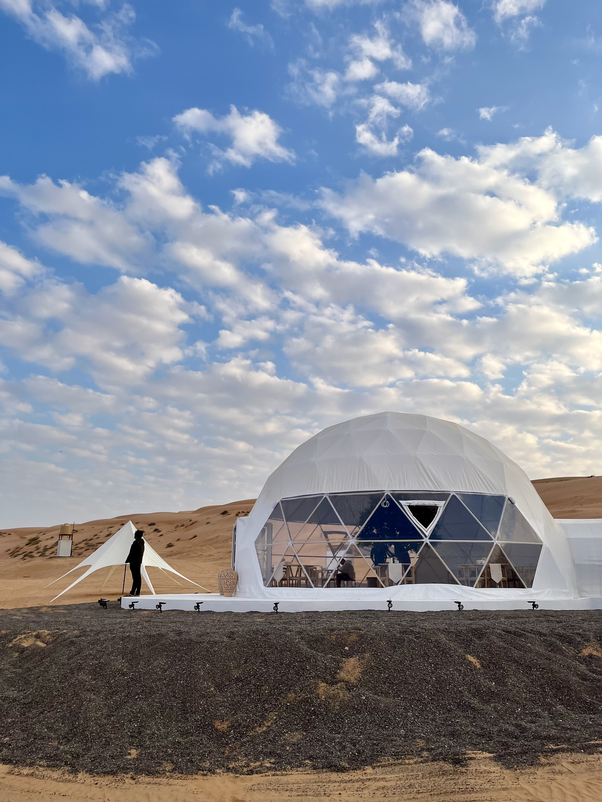

🇱🇰
Sri Lanka Diaries
8 days from Colombo's coastline to the misty tea hills of Nuwara Eliya.
Read the Diary →Seven days, one rented 4x4 — desert dunes, canyon pools, mountain-top sunsets and a whole lot of Karak chai.
Muscat → Bimmah Sinkhole → Wadi Shab → Wahiba Sands → Nizwa → Jebel Akhdar → Muscat
Self-drive rental — 4x4 recommended for Jebel Akhdar & Wahiba Sands
Omani Rial (OMR)
Nov–Mar, cooler desert weather
A journey through majestic Oman — every stop, every cost.

Muttrah at sunset — old Muscat framed by the mountains.

The trek and swim into Wadi Ash Shab's hidden pools.

The fort at sunset, ringed by a palm oasis.

Sunset at Al Qurum Beach, back in Muscat.






What the itinerary adds up to, per person, assuming a group of 4–5 sharing the rental car and rooms — flight cost sourced from current India–Muscat fare averages since it wasn't in the original diary.
Approximate figures for 2026 — solo travelers should budget notably higher since the car rental and rooms won't be split. Going with 3–5 friends (like this trip) is what keeps Oman surprisingly affordable despite the pricier flights.
8 days from Colombo's coastline to the misty tea hills of Nuwara Eliya.
Read the Diary →